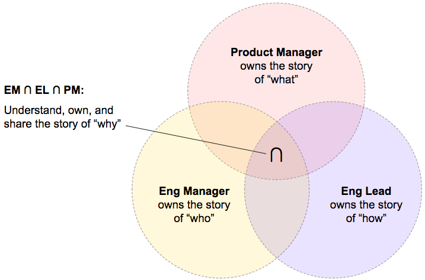

Project Management in Five Minutes
Introduction
If you’re a technical lead (aka engineering lead, lead developer, etc), then there comes a time where you’ll be put in charge of a project.
You may also already be quite familiar with the process (read: red tape) of certain types of project management: agile, scrum, lean etc.
So what do you do, follow one of those methodologies to the letter and have to suffer all the process that comes along with it? You could do.
For me, I find the following things are good enough to get you by without having to worry about whether you’re “doing scrum” (or whatever) correctly.
I suggest you take what you want and leave the rest.
But first, let’s take a moment to recognise and understand a few distinct roles that otherwise can appear to have a lot of cross-over responsibilities (this has been summarised from the great work originally published by Lara Hogan - I highly recommend you check out her work).
What Who How Why?
- Product Manager: owns the story of “what”
- Engineering Manager: owns the story of “who”
- Engineering Lead (Tech Lead): owns the story of “how”
- All Three: each person shares ownership of the story of “why”

More details… (Lara Hogan’s original post)
Project Management Checklist
This is a short checklist of things you probably should be doing…
🤔 Understand the requirements, and specifically why they are important.
- If you don’t understand the project values, then you’ll have a hard time building something that benefits your users.
- Does the project even align with your team’s mission statement/responsibilities? You should be focused on building things that bring value to your stakeholders.
📝 Create simple/high-level Gherkin user stories
- This is one way of helping you better understand the product values and standards (there are other ways, but this is what I like using).
✅ Break down the requirements
- Define milestones and manageable sub tasks.
- inc. investigation time, QA (Quality Assurance) and security testing.
🔝 Prioritise tasks
- You can do this either by ‘importance/impact’ (High, Medium, Low) or using ‘MSC’ (Must Should Could).
- Once categorized, group related items (e.g. group together all high, medium, low items).
- A table matrix can help visualise the various tasks and their importance.
Regardless of the approach you choose, you wont be able to prioritize using just a ‘problem/solution/impact’ approach. You’ll need to document and consider both ‘cost’ and ‘risk’ as part of your assessment. Here is an example document you can use.
🗒 Work through the unknowns
- Do this over and over, until there is no more value to be gained in spending time on them.
🗣 Figure out who and which teams need to be consulted
- Then communicate as often as practical and/or relevant.
📆 Run the project and adjust the plan as you go.
- How far has the project come?
- How far is it from completion?
Don’t work faster (and or harder) when you discover the team is missing deadlines (e.g. “it’s ok, I know we missed this deadline/milestone, but we’re sooooo close, let’s crank it up and get it done!”). STOP! take a breath and understand why the deadline was missed. Were there any trending patterns that are likely to repeat themselves?
📈 Track changes to requirements
- Be clear about the cost of those changes.
- How do these changes affect the completion?
- Should we cut some existing features in order to accommodate the new work?
📊 Ensure observability and monitoring is in place.
- Never release a product you can’t track out in the wild.
- Don’t forget your on-call process. Ensure monitors are in place.
⛑ Define a rollout plan and what the roll back steps look like.
- What systems need to be integrated with?
- Notify appropriate on-call and support teams.
- Rollback plan can be a spreadsheet, word doc, doesn’t matter, just have one.
❤️ Retro
- What went well, what didn’t, what could we do differently in future?
- Communicate with radical candor (care personally, challenge directly).
🎉 CELEBRATE!
- Doesn’t matter how big or small the project, or whether it was difficult at times. Always, always, celebrate the finishing line and thank your team for their hard work.
Shielding
Don’t shield the team from issues that are arising around them (e.g. don’t think “oh, they’re stressed and missing deadlines, so I need to pretend like everything is ok” – it’s not ok). Treat the team with respect, as adults, and let them know things aren’t working and that we need to adjust the process to resolve that.
Yes, shield the team from distractions, but that is something altogether different than shielding them from bombs exploding around them. They can help you negotiate those mindfields if you let them. We’re working with adults, and they don’t need to have scary things hidden from them.
Positive Mindset
I’ve found that swapping the word “problem” for “challenge” a good thing to do in general, whether it be talking about an actual technical challenge or discussing a challenging interaction with another employee.
The subtle switch in language helps me refocus on a more positive and motivated projectory (rather than setting myself up to be in a negative mindset for the conversation).
Recognising Trends
As time goes on, you might start having issues with your team (for various reasons - we’re humans, we’re notoriously difficult creatures).
When reporting to your line manager (e.g. 1:1’s where you discuss things that are on your mind), it can be difficult sometimes to voice concerns without explicit examples.
Depending on the situation, explicit examples aren’t always possible to recall. In those cases where you have a niggling feeling something isn’t quite right but you couldn’t point to an exact moment in time where an incident occurred, then being able to see a trend of something negative happening can help you to raise it up to leadership.
Be aware of trends in people, otherwise you might find yourself in a bad situation and not sure how or why you got there in the first place. If you catch problems early enough, you can help work towards a solution that gets your team back on track.
User Stories
In case you’re not familiar with user stories…
Gherkin is plain-text with a little extra structure and is designed to be easy to learn by non-programmers, yet structured enough to allow concise description of examples to illustrate business rules in most real-world domains. – https://cucumber.io/docs/reference
I find it’s good for documentation, but it can also be helpful to some teams to use these user stories as a foundation for their own integration testing systems (although I personally wouldn’t, I prefer just using them as a simple reference for what it is we want to achieve at a high-level).
Below is an example ‘feature’, broken down into various scenarios.
Feature: User Authentication
...optional description about this feature here...
Scenario: authenticated user requesting a page
Given I am a BuzzFeed user (internal or external)
And I’m already signed in
When I visit www.buzzfeed.com or www.buzzfeed.com/post
Then I am directed to my destination page
Scenario: unauthenticated user requesting a page
Given I am a BuzzFeed user (internal or external)
And I’m not signed in
When I visit www.buzzfeed.com or www.buzzfeed.com/post
Then I am able to login with <method>
Examples:
| method |
| Facebook |
| Twitter |
| Google |
| Username/Password |
Scenario: unauthenticated user successful login
Given I am a BuzzFeed user (internal or external)
And I provide valid credentials
When I attempt to login
Then I am directed to my destination page
Scenario: unauthenticated user failed login
Given I am a BuzzFeed user (internal or external)
And I provide invalid credentials
When I attempt to login
Then I am presented with a login error
Scenario: unauthenticated user sign-up
Given I am a BuzzFeed user (internal or external)
And I am not already registered in the system
When I visit www.buzzfeed.com/cms
Then I am directed to a legacy sign-up flow